Установка на Android, первый вход и подробное описание каждого экрана: заказы, клиенты, оплаты, склад, доставка, аудит и умные агенты.
Android 10+APK-установка5 ролей5 языковРабота с реальными данными
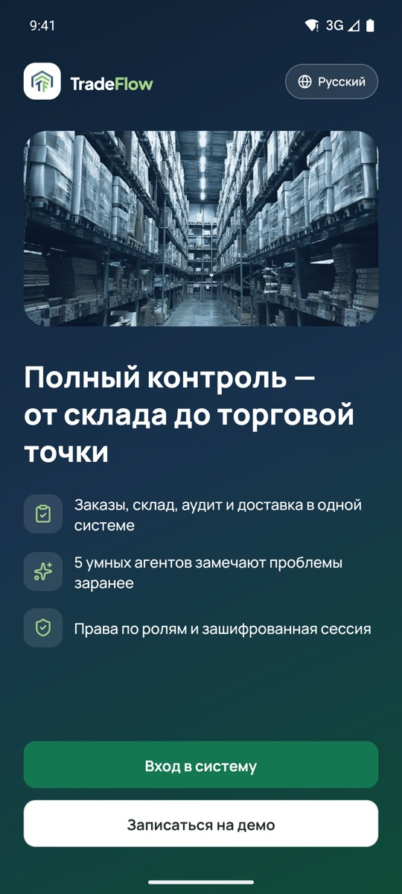
Версия приложения1.0.0
ПлатформаAndroid (iOS — позже)
Датаноябрь 2026
Содержание
Руководство состоит из двух частей. Это часть 1 — мобильное приложение. Часть 2 описывает веб-панель.
1О приложении TradeFlow
Что умеет система · Для кого · Роли пользователей
2Установка на Android (APK) — пошагово
Подготовка · 9 шагов установки · Обновление · Удаление · Если что-то пошло не так
3Первый запуск и вход
Экран приветствия · Заявка на демо · Вход · Выбор языка
4Навигация и роли
Нижнее меню · Раздел «Ещё» · Какие экраны видит каждая роль
5Экраны приложения — подробно
Дашборд · Заказы · Карточка и создание заказа · Клиенты · Финансы · Доставка · Остатки и движение · Аудит · Товары · Склады · Торговая команда · Умные агенты · Лиды · Ещё · Мой профиль
6Работа по ролям — готовые сценарии
Торговый агент · Курьер · Аудитор · Менеджер
7Правила системы, которые важно знать
8Частые вопросы и помощь
Как читать это руководство
Названия кнопок и разделов выделены зелёным жирным шрифтом — так же они подписаны в приложении. Все снимки экрана сделаны в рабочей версии TradeFlow на русском языке. Имена клиентов и суммы на снимках — демонстрационные данные.
1
О приложении TradeFlow
Вся дистрибуция — в кармане у каждого сотрудника
TradeFlow — это CRM-система для оптовой торговли и дистрибуции. Она объединяет в одном месте склады и остатки, клиентов (торговые точки) с кредитными лимитами, заказы, доставку, оплаты, инвентаризацию (аудит), работу торговых агентов и заявки новых клиентов.
Мобильное приложение TradeFlow — это полноценная часть системы, а не упрощённая копия. Оно работает с теми же данными, что и веб-панель, в реальном времени. Заказ, созданный агентом на телефоне, сразу виден менеджеру в офисе. Оплата, принятая курьером, сразу уменьшает долг клиента. Пересчёт аудитора сразу попадает в отчёт.
Что умеет система
₪
Заказы
Создание заказа за минуту, подтверждение, отгрузка, доставка. Остаток резервируется автоматически.
◎
Клиенты
Торговые точки, сегменты A/B/C, кредитный лимит, текущий долг и акт сверки.
₸
Оплаты
Приём оплаты наличными, картой или переводом, ссылка на оплату через Payme и Click.
▦
Склад
Остатки по складам, резерв, приход, расход, перемещение и полная история движений.
➜
Доставка
Маршруты курьеров, статусы «в пути», «доставлен», «неудачно», доля доставок вовремя.
✓
Аудит
Инвентаризация с телефона: лист пересчёта, расхождения в штуках и в сумах, утверждение.
★
Торговая команда
Выполнение месячного плана каждым агентом, продажи, активные клиенты, долг клиентов.
✦
Умные агенты
5 автоматических аналитиков находят проблемы раньше вас и подсказывают, что делать.
✉
Лиды
Заявки с формы «Записаться на демо» и работа с ними до превращения в клиента.
Почему это удобно
Одни данные для всех. Телефон и веб-панель работают с одной базой, поэтому никому не нужно ничего переносить вручную.
Система сама следит за правилами. Нельзя отгрузить больше, чем есть на складе, и нельзя превысить кредитный лимит клиента. Если действие запрещено, приложение покажет понятное сообщение.
Каждый видит только своё. Набор экранов и кнопок зависит от роли сотрудника.
Безопасность. Сессия хранится в зашифрованном хранилище телефона, а все действия записываются в журнал.
5 языков интерфейса: O'zbekcha, Ўзбекча, Русский, English, Кыргызча. Язык можно сменить в любой момент.
Роли пользователей
Каждому сотруднику администратор выдаёт логин, пароль и одну из пяти ролей. От роли зависит, какие экраны и действия доступны.
Роль
Чем занимается
Главные экраны в приложении
Администратор
Полный доступ: сотрудники, роли, интеграции, журнал действий, а также все функции менеджера.
Всё, что видит менеджер
Менеджер
Управляет продажами, складом, финансами и доставкой. Подтверждает заказы и утверждает аудиты.
Дашборд, Заказы, Остатки, Финансы, Ещё
Торговый агент
Добавляет клиентов, принимает заказы и оплаты у торговых точек.
Дашборд, Заказы, Клиенты, Финансы, Ещё
Курьер
Доставляет заказы, обновляет статус доставки и принимает оплату.
Доставка, Заказы, Финансы, Ещё
Аудитор
Проводит инвентаризацию на складе и сдаёт результат на утверждение.
Аудит, Остатки, Ещё
2
Установка на Android (APK)
Пошаговая инструкция: от ссылки до первого запуска — около 3 минут
На этапе пилотного запуска TradeFlow устанавливается не из Google Play, а из файла APK — это установочный файл Android-приложения. Вашей компании его выдаёт администратор системы. Установка безопасна, если файл получен по официальной ссылке вашей компании.
Перед началом проверьте
Что нужно
Как проверить
Android 10 или новее
Настройки → О телефоне → Версия Android
Свободная память ≈ 150 МБ
Настройки → Хранилище
Интернет
Wi-Fi или мобильный интернет. Приложение работает только онлайн.
Ссылка на установку
Ссылку или QR-код присылает администратор (например, в Telegram или по SMS).
Логин и пароль
Их также выдаёт администратор. Пароль никому не передавайте.
Важно
Устанавливайте TradeFlow только по ссылке, которую прислал администратор вашей компании. Не скачивайте файлы «TradeFlow.apk» из сторонних сайтов и чатов.
9:41▾ ▴ ▮
🔒 expo.dev/accounts/…/tradeflow
TradeFlow
Android · версия 1.0.0 · Internal distribution
Install
1Откройте ссылку на установку
Нажмите на ссылку, которую прислал администратор. Если вам прислали QR-код, наведите на него камеру телефона и нажмите на появившуюся ссылку.
Ссылка откроется в браузере Chrome. Вы увидите страницу приложения TradeFlow со значком и номером версии.
Нажмите кнопку Install (Установить).
Совет
Если ссылка открылась внутри Telegram, нажмите ⋮ → Открыть в браузере. Так загрузка пройдёт надёжнее.
Если прислали сам файл
Если администратор прислал файл TradeFlow.apk прямо в чат, нажмите на файл, дождитесь загрузки и переходите сразу к шагу 4.
9:41▾ ▴ ▮
🔒 expo.dev/accounts/…/tradeflow
Скачать файл?
Этот файл может нанести вред вашему устройству. Всё равно скачать TradeFlow.apk (≈ 90 МБ)?
ОтменаСкачать
2Подтвердите загрузку файла
Chrome предупреждает о любых APK-файлах, скачанных не из Google Play. Это стандартное сообщение, оно не означает, что файл опасен.
Нажмите Скачать.
Дождитесь окончания загрузки. Обычно это занимает от 20 секунд до 2 минут, в зависимости от скорости интернета.
Совет
Не закрывайте браузер, пока идёт загрузка. Ход загрузки виден в шторке уведомлений.
9:42▾ ▴ ▮
↓
Загрузка завершена
TradeFlow.apk · 90 МБ
Открыть
Другой способ: Файлы → Загрузки → TradeFlow.apk
3Откройте скачанный файл
Когда загрузка завершится, внизу экрана или в шторке уведомлений появится сообщение «Загрузка завершена».
Нажмите Открыть.
Если вы пропустили уведомление, откройте приложение Файлы (или Мои файлы на Samsung), перейдите в папку Загрузки и нажмите на файл TradeFlow.apk.
9:42▾ ▴ ▮
Chrome
В целях безопасности на вашем телефоне запрещена установка неизвестных приложений из этого источника.
ОтменаНастройки
4Разрешите установку из этого источника
При первой установке Android попросит разрешение. Это нужно сделать один раз для того приложения, через которое вы скачали файл (Chrome, Файлы или Telegram).
В окне предупреждения нажмите Настройки.
Включите переключатель Разрешить установку из этого источника (снимки ниже).
Нажмите кнопку ← Назад — вы вернётесь к установке.
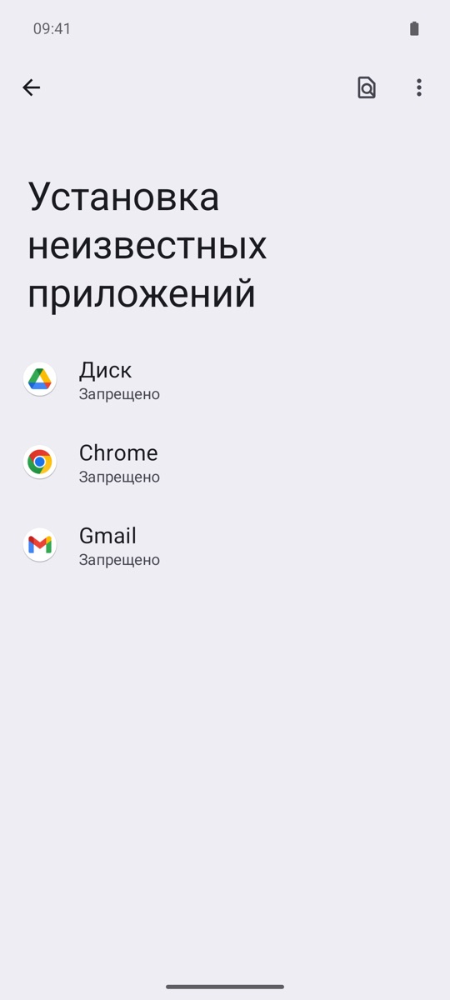
Список «Установка неизвестных приложений». Для каждого источника указано «Запрещено».
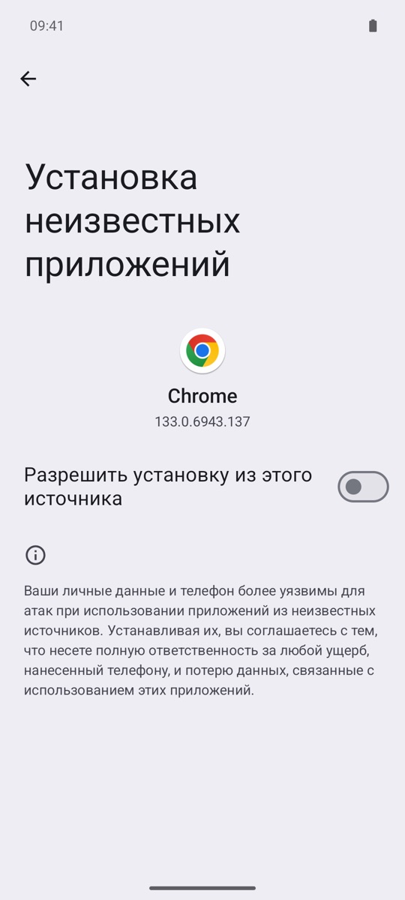
Было: переключатель выключен — установка из Chrome запрещена.
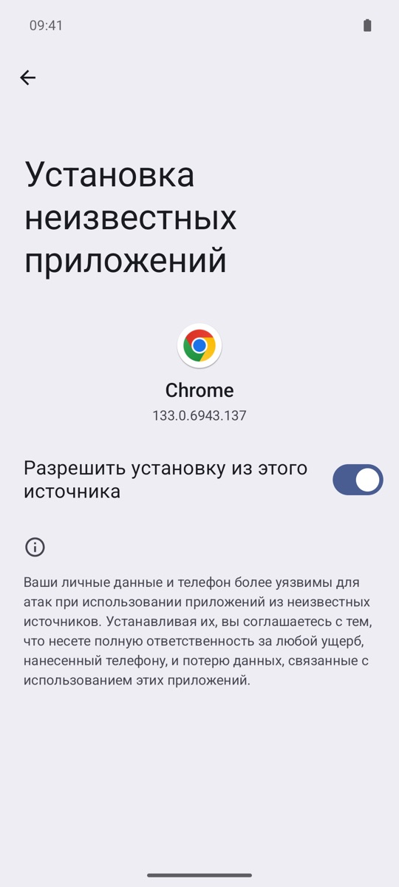
Стало: переключатель включён — можно продолжать.
Где найти эту настройку вручную
Стандартный Android, Google Pixel: Настройки → Приложения → Специальный доступ → Установка неизвестных приложений → Chrome.
Samsung: Настройки → Приложения → ⋮ → Особые права доступа → Установка неизвестных приложений.
Xiaomi, Redmi, POCO: Настройки → Защита конфиденциальности → Особые разрешения → Внешние источники.
Названия пунктов могут немного отличаться в зависимости от модели телефона.
9:43▾ ▴ ▮
TradeFlow
Установить это приложение?
ОтменаУстановить
5Нажмите «Установить»
Появится системное окно установки со значком и названием TradeFlow.
Нажмите Установить и подождите 10–30 секунд.
Кнопка не нажимается?
Отключите приложения, которые рисуют поверх экрана: фильтр синего света, плавающие кнопки, «пузыри» чатов. Затем снова откройте файл.
9:43▾ ▴ ▮
Google Play Защита
Приложение не проверено. Разработчик этого приложения неизвестен Play Защите. Приложения от неизвестных разработчиков иногда бывают небезопасными.
Не устанавливатьПодробнее → Всё равно установить
6Если появилась «Play Защита»
Google Play Защита проверяет все приложения, установленные не из магазина. Пилотная версия TradeFlow ещё не опубликована в Google Play, поэтому Android может показать предупреждение.
Нажмите Подробнее (или стрелку ⌄).
Нажмите Всё равно установить.
Если Android предложит отправить приложение на проверку, можно нажать Не отправлять — на установку это не влияет.
Окно появляется не на всех телефонах. Если его нет, переходите к шагу 7.
9:44▾ ▴ ▮
TradeFlow
Приложение установлено.
ГотовоОткрыть
7Установка завершена — нажмите «Открыть»
Когда появится сообщение «Приложение установлено», нажмите Открыть. TradeFlow запустится сразу.
Если нажали Готово, ничего страшного: приложение уже на телефоне, его можно открыть со значка (шаг 8).
После установки
Файл TradeFlow.apk в папке «Загрузки» больше не нужен — его можно удалить, чтобы освободить место. Разрешение из шага 4 можно снова выключить.
9:44▾ ▴ ▮
Телефон
Сообщения
Chrome
TradeFlow
Камера
Галерея
Telegram
Файлы
8Найдите значок TradeFlow
Значок TradeFlow (сине-зелёный знак с буквами «TF») появится на рабочем столе или в меню всех приложений (смахните снизу вверх).
Чтобы быстро находить приложение, нажмите на значок и удерживайте его, затем перетащите на главный экран.
9Первый запуск
При первом открытии вы увидите экран приветствия TradeFlow.
В правом верхнем углу нажмите кнопку языка и выберите Русский (или другой удобный язык).
Нажмите Вход в систему.
Введите логин и пароль, которые выдал администратор, и снова нажмите Вход в систему.
Готово — вы в системе. Подробно вход описан в разделе 3.
Сессия запоминается
Повторно вводить пароль при каждом запуске не нужно. Сессия действует 7 дней. Также она завершится, если вы нажмёте «Выйти» или администратор сменит вам пароль либо роль.
Обновление приложения
При запуске приложение само проверяет, не вышла ли новая версия.
Доступна новая версия. Приложение покажет предупреждение, но работать можно дальше. Обновитесь при первой возможности.
Версия устарела. Появится экран «Обновите приложение» с текстом «Эта версия устарела. Чтобы продолжить, обновите приложение». Работа будет доступна только после обновления. Нажмите Обновить.
Чтобы обновить приложение, получите у администратора новую ссылку и повторите шаги 1–7. Новая версия устанавливается поверх старой: удалять старую не нужно, данные и вход сохранятся. В окне установки вместо «Установить» будет кнопка Обновить.
Удаление приложения
Нажмите на значок TradeFlow и удерживайте его, затем выберите Удалить. Или откройте Настройки → Приложения → TradeFlow → Удалить. Ваши данные (заказы, клиенты, оплаты) хранятся на сервере, а не в телефоне, поэтому при удалении приложения они не пропадут.
Если что-то пошло не так
Сообщение или ситуация
Что делать
«Приложение не установлено»
Освободите память (нужно ≈ 150 МБ). Проверьте, что у вас Android 10 или новее. Если раньше была установлена другая сборка TradeFlow, удалите её и установите заново.
«Ошибка синтаксического анализа пакета»
Файл скачался не полностью. Удалите TradeFlow.apk из «Загрузок» и скачайте его заново (шаги 1–3).
Кнопка «Установить» серая
Отключите фильтр синего света, плавающие окна и «пузыри» чатов, затем откройте файл снова.
Нет пункта «Разрешить установку из этого источника»
Найдите настройку вручную (см. подсказку к шагу 4) для приложения, через которое скачан файл.
Play Защита удалила или заблокировала приложение
Установите заново и на шаге 6 выберите «Подробнее → Всё равно установить».
Приложение открывается, но данные не загружаются
Проверьте интернет. Потяните список вниз, чтобы обновить его, или нажмите «Повторить».
3
Первый запуск и вход
Приветствие, заявка на демо, вход и выбор языка
Экран приветствия
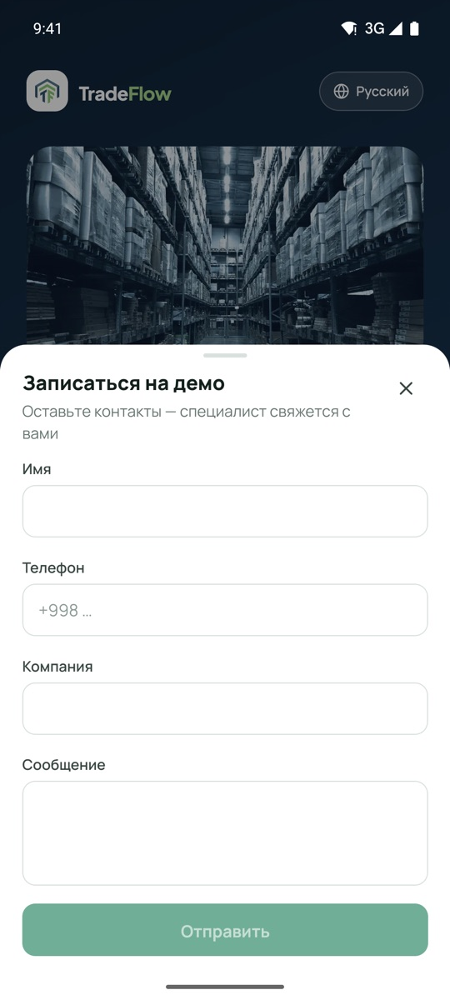
Форма «Записаться на демо»
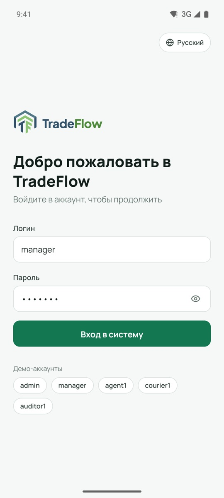
Экран входа
Экран приветствия
Это первое, что видит пользователь. Здесь кратко описаны возможности системы: заказы, склад, аудит и доставка в одной системе, 5 умных агентов и права по ролям.
Русский (кнопка вверху справа) — выбор языка интерфейса. Доступны: O'zbekcha, Ўзбекча, Русский, English, Кыргызча.
Вход в систему — переход к экрану входа.
Записаться на демо — форма для тех, у кого ещё нет аккаунта.
Заявка на демо
Если вы ещё не работаете в TradeFlow, но хотите попробовать систему, заполните поля Имя, Телефон, Компания и при желании Сообщение, затем нажмите Отправить. Заявка сразу появится у менеджеров в разделе Лиды, и специалист свяжется с вами.
Вход в систему
Введите Логин — короткое имя пользователя латиницей (например, agent14).
Введите Пароль. Значок «глаз» справа показывает пароль, чтобы проверить, нет ли ошибки.
Нажмите Вход в систему.
После входа приложение откроет главный экран вашей роли: для менеджера и агента это Дашборд, для курьера — Доставка, для аудитора — Аудит.
Демо-аккаунты
В тестовой (пилотной) сборке под кнопкой входа есть блок «Демо-аккаунты»: admin, manager, agent1, courier1, auditor1. Нажатие заполняет логин и пароль демо-пользователя, чтобы быстро посмотреть систему глазами разных ролей. В версии из Google Play этого блока нет.
После 5 неудачных попыток вход для этого логина временно блокируется на 15 минут. Подождите или обратитесь к администратору.
Аккаунт заблокирован
Администратор отключил вашу учётную запись. Обратитесь к нему.
Вас вернуло на экран входа
Сессия завершилась: прошло 7 дней, сменился пароль или роль, либо администратор закрыл сессию. Просто войдите снова.
4
Навигация и роли
Нижнее меню, раздел «Ещё» и набор экранов для каждой роли
Внизу экрана находится панель вкладок (до 5 кнопок). На ней — экраны, с которыми ваша роль работает чаще всего. Остальные разделы собраны во вкладке Ещё. Кнопка ← вверху слева возвращает на предыдущий экран. Любой список можно обновить, потянув его вниз.
Умные агенты, Доставка, Остатки и движение, Товары, Торговая команда, Мой профиль
Курьер
Доставка · Заказы · Финансы · Ещё
Дашборд, Клиенты, Мой профиль
Аудитор
Аудит · Остатки · Ещё
Дашборд, Склады, Товары, Мой профиль
Как выглядит приложение у разных ролей
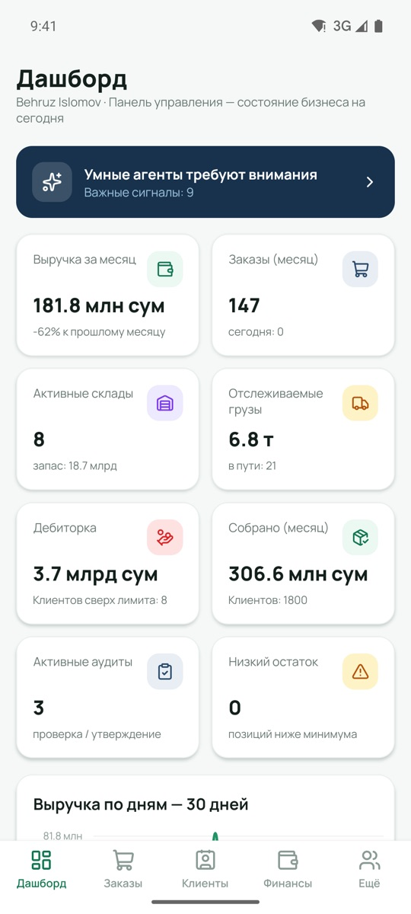
Торговый агент: Дашборд, вкладка «Клиенты» внизу
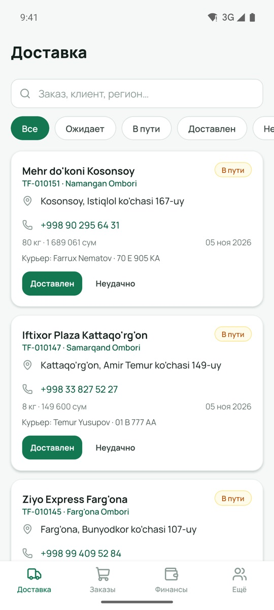
Курьер: открывается «Доставка»
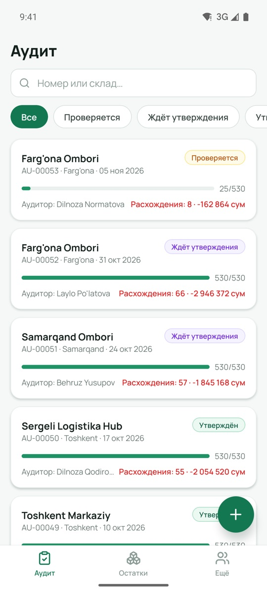
Аудитор: открывается «Аудит»
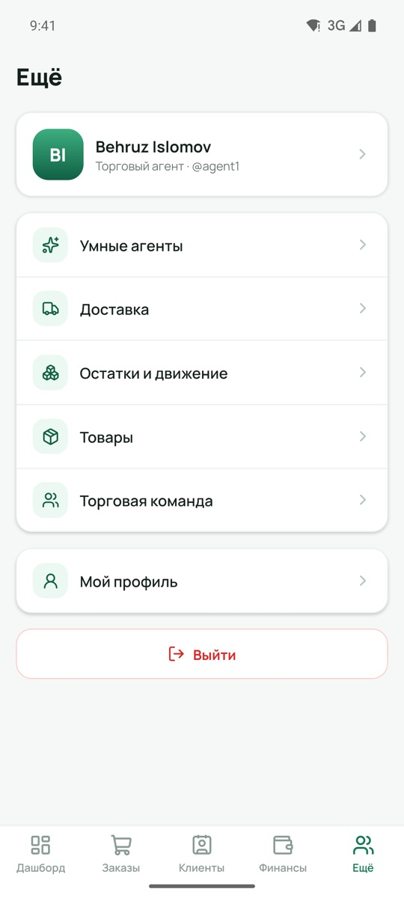
«Ещё» у торгового агента
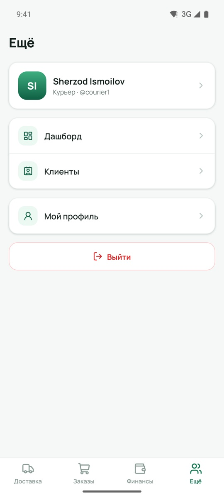
«Ещё» у курьера
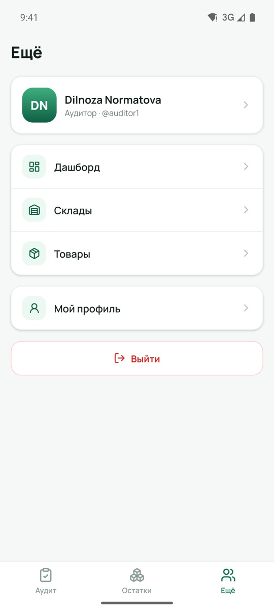
«Ещё» у аудитора
Если кнопки нет
Приложение показывает только те действия, которые разрешены вашей роли. Если вам нужна функция, которой у вас нет (например, утверждение аудита), обратитесь к менеджеру или администратору.
5
Экраны приложения — подробно
Что вы видите на каждом экране и что на нём можно сделать
5.1 Дашборд все роли
Дашборд — верхняя часть
Дашборд — это панель управления, которая показывает состояние бизнеса на сегодня. Под заголовком указаны ваше имя и роль.
Блок «Умные агенты требуют внимания»
Показывает количество важных сигналов. Нажмите на блок, чтобы открыть экран Умные агенты со всеми рекомендациями.
Ключевые показатели (карточки)
Выручка за месяц и изменение к прошлому месяцу в процентах.
Заказы (месяц) — сколько заказов за месяц и сколько сегодня.
Активные склады и стоимость запаса.
Отслеживаемые грузы — вес грузов и сколько доставок сейчас в пути.
Дебиторка — общий долг клиентов и число клиентов сверх лимита.
Собрано (месяц) — оплаты за месяц.
Активные аудиты — на проверке или утверждении.
Низкий остаток — позиции ниже минимума.
Карточки нажимаются: например, «Дебиторка» открывает список клиентов с превышением лимита, а «Низкий остаток» — склад с фильтром по низким остаткам.
Графики ниже на экране
Выручка по дням — 30 дней: как меняются продажи день за днём.
Объём продаж по месяцам: столбцы «Продажи» и «Собрано» рядом, чтобы видеть разрыв между отгрузками и оплатами.
Товарный поток: приход и расход товара за последние месяцы.
Статусы заказов, Топ товаров и Продажи по регионам.
Совет
Каждое утро начинайте с Дашборда: за 10 секунд видно, где проблемы — долги, низкие остатки, незавершённые аудиты.
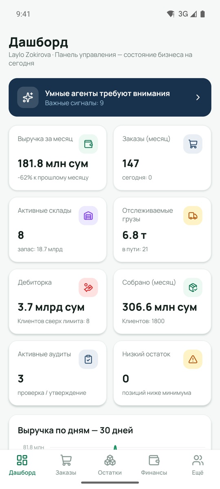
Дашборд — графики
5.2 Заказы менеджер · агент · курьер
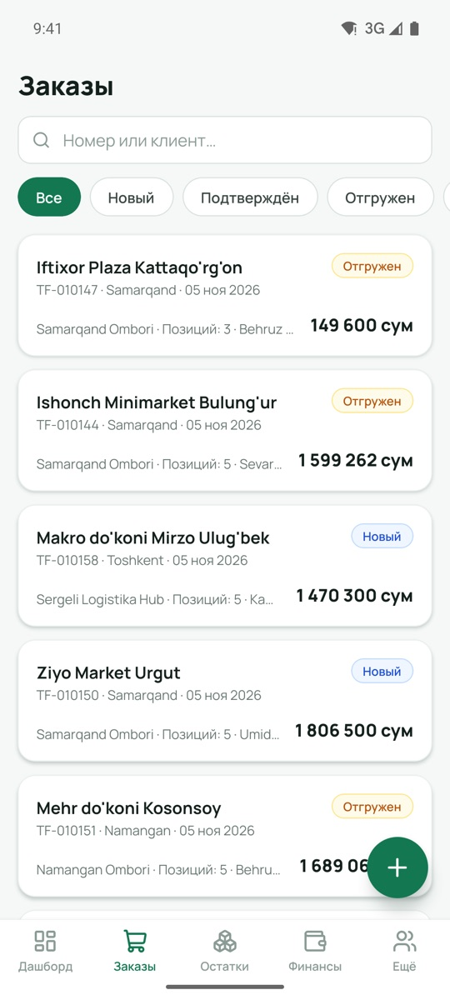
Список заказов
Список всех заказов: сверху самые новые. В каждой строке указаны клиент, номер заказа (например, TF-010147), регион, дата, склад, количество позиций, торговый агент, сумма и статус.
Поиск и фильтры
Поле Номер или клиент… — быстрый поиск.
Фильтры-статусы: Все, НовыйПодтверждёнОтгруженДоставленОтменён.
Жизненный цикл заказа
Новый→Подтверждён→Отгружен→Доставлен
Подтверждён — товар резервируется на складе, и другие заказы не смогут его забрать.
Отгружен — товар списывается со склада, сумма заказа добавляется к долгу клиента, автоматически создаётся доставка.
Доставлен — заказ закрыт.
Отменён — можно отменить новый или подтверждённый заказ. Резерв при этом освобождается.
Кнопка + внизу справа создаёт новый заказ (менеджер и торговый агент).
5.3 Карточка заказа
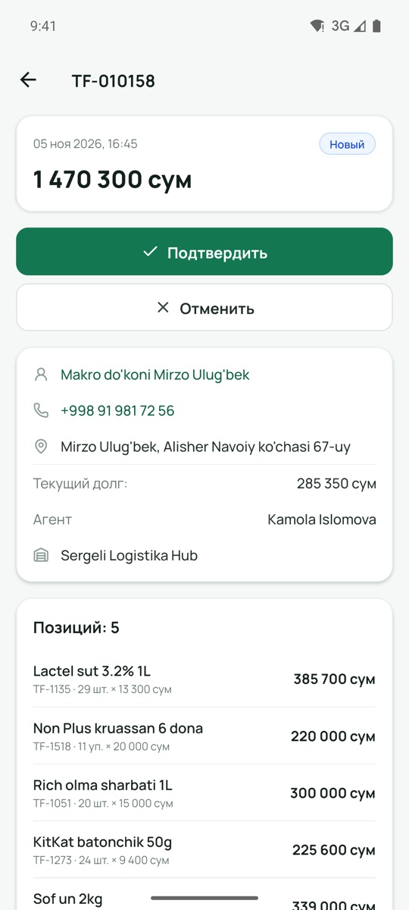
Карточка нового заказа
Нажмите на заказ в списке, чтобы открыть его карточку. Здесь собрано всё о заказе:
дата, сумма и текущий статус;
клиент: название, телефон (нажмите, чтобы позвонить), адрес и текущий долг;
логистика: торговый агент, склад, курьер и номер машины;
позиции: товар, артикул, количество, цена и сумма, а также промежуточная сумма, скидка и итог.
Действия (зависят от статуса и роли)
Статус
Кнопки
Новый
Подтвердить, Отменить
Подтверждён
Отгрузить — открывает окно «Отгрузка и назначение курьера»: выберите курьера (или «Назначить позже»), укажите номер машины и нажмите Подтвердить отгрузку. Также доступна кнопка Отменить.
Отгружен
Доставлен
Подтверждать, отгружать и отмечать доставку могут менеджер и курьер. Торговый агент видит заказ только для просмотра.
5.4 Новый заказ менеджер · агент
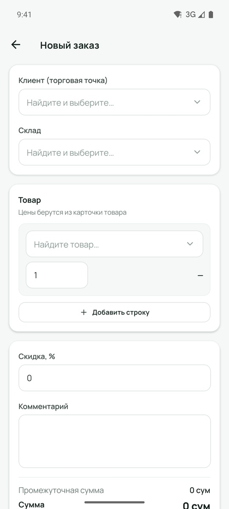
Создание заказа
Клиент (торговая точка) — начните вводить название и выберите клиента из списка. Поиск идёт по всей базе.
Склад — с какого склада будет отгрузка. В списке есть только активные склады.
Товар — найдите товар по названию или артикулу и укажите количество. Цена подставляется автоматически из карточки товара.
Проверьте Промежуточную сумму и Сумму внизу и нажмите Создать заказ.
Кредитный лимит
Если у клиента установлен кредитный лимит, а его долг вместе с суммой нового заказа превышает лимит, система не создаст заказ и покажет сообщение. Сначала примите оплату у клиента или обратитесь к менеджеру.
Не нажимайте дважды
Пока заказ сохраняется, кнопка неактивна. Если пропал интернет, сначала обновите список заказов и проверьте, создался ли заказ, и только потом пробуйте снова.
5.5 Клиенты менеджер · агент · курьер
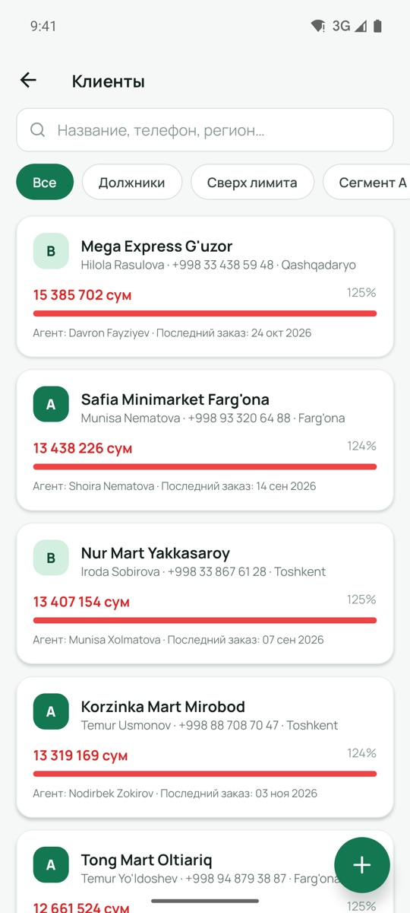
Список клиентов
Клиенты — это торговые точки: магазины, минимаркеты, супермаркеты. В карточке списка показаны:
название и сегмент (A, B или C — по объёму закупок);
владелец, телефон и регион;
долг и полоса использования кредитного лимита в процентах: красная полоса означает, что лимит превышен;
закреплённый торговый агент и дата последнего заказа.
Фильтры
Все, Должники, Сверх лимита, Сегмент A / B / C. Поиск — по названию, телефону и региону.
Кнопка + добавляет нового клиента (менеджер и торговый агент).
5.6 Карточка клиента
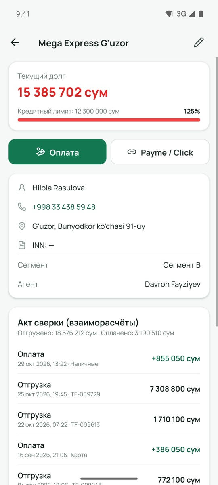
Карточка клиента
Текущий долг (крупно), Кредитный лимит и процент его использования.
Оплата — принять оплату от этого клиента: клиент уже выбран, остаётся ввести сумму.
Payme / Click — создать ссылку на онлайн-оплату и отправить её клиенту в Telegram или по SMS. Клиент оплачивает долг сам, и платёж автоматически попадает в «Финансы».
Контакты: владелец, телефон (нажатие запускает звонок), адрес, ИНН, сегмент и агент.
Карандаш вверху справа — редактирование клиента, в том числе кредитного лимита (только менеджер).
Акт сверки (взаиморасчёты)
Хронология всех операций с клиентом: Отгрузка (увеличивает долг, с номером заказа) и Оплата (уменьшает долг, со способом оплаты). Вверху блока указаны итоги: сколько отгружено и сколько оплачено. По акту удобно сверяться с клиентом прямо в магазине.
5.7 Новый клиент менеджер · агент
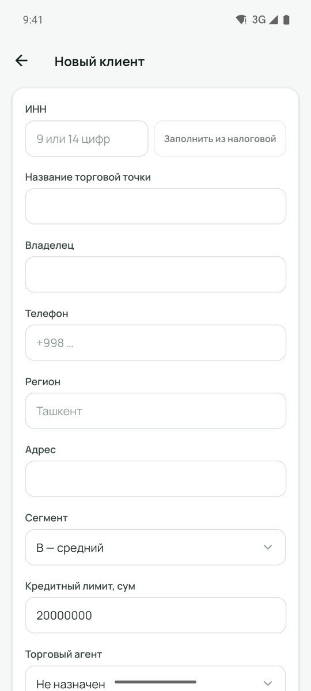
Форма нового клиента
ИНН — введите 9 цифр (для юрлица) или 14 цифр (ПИНФЛ) и нажмите Заполнить из налоговой. Название, владелец и адрес подставятся автоматически из налоговой базы.
Проверьте или заполните: Название торговой точки, Владелец, Телефон, Регион, Адрес.
Сегмент — A (крупный), B (средний) или C (малый).
Кредитный лимит, сум — максимальный допустимый долг. Значение 0 означает, что лимит не ограничен.
Торговый агент — кто ведёт клиента.
Нажмите кнопку сохранения внизу формы.
Совет
Заполнение по ИНН экономит время и исключает ошибки в названии и адресе.
5.8 Финансы менеджер · агент · курьер
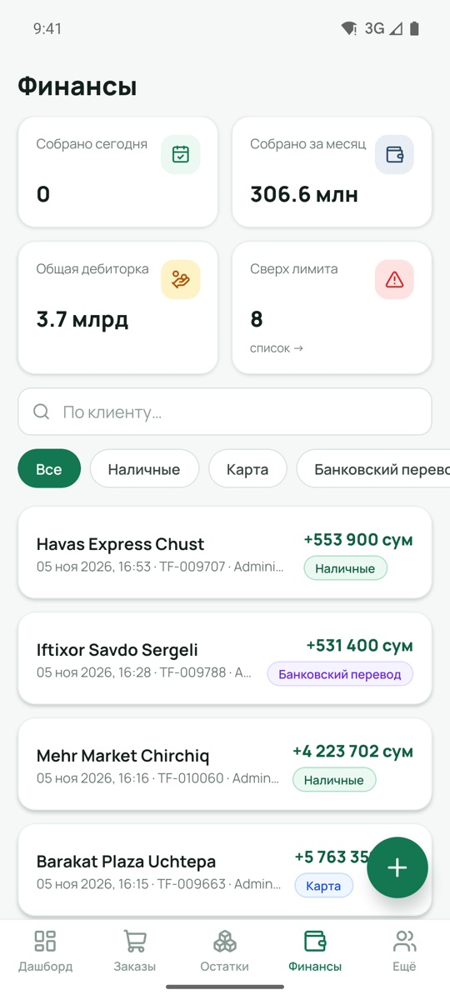
Финансы — оплаты
Экран оплат, кассы и контроля дебиторской задолженности.
Карточки вверху
Собрано сегодня и Собрано за месяц.
Общая дебиторка — сколько всего должны клиенты.
Сверх лимита — число клиентов с превышением; ссылка список → открывает их.
Список оплат
Каждая строка — одна оплата: клиент, дата, номер заказа, кто принял, сумма и способ. Фильтры: Все, Наличные, Карта, Банковский перевод, а также онлайн-оплаты Payme и Click. Есть поиск по клиенту.
Кнопка Принять оплату (зелёная, внизу справа) открывает форму оплаты.
Как принять оплату
Нажмите Принять оплату.
Клиент — найдите и выберите торговую точку.
Сумма, сум — сумма должна быть больше нуля.
Способ оплаты — Наличные, Карта или Банковский перевод.
Комментарий — по желанию (например, номер квитанции).
Нажмите Принять оплату. Долг клиента сразу уменьшится.
Внимательно
Оплата сохраняется сразу и не повторяется автоматически. Если пропал интернет, сначала проверьте список оплат, и только потом вводите оплату снова, чтобы не принять её дважды.
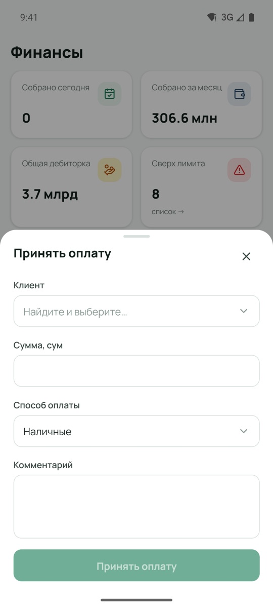
Форма «Принять оплату»
5.9 Доставка менеджер · курьер · агент (просмотр)
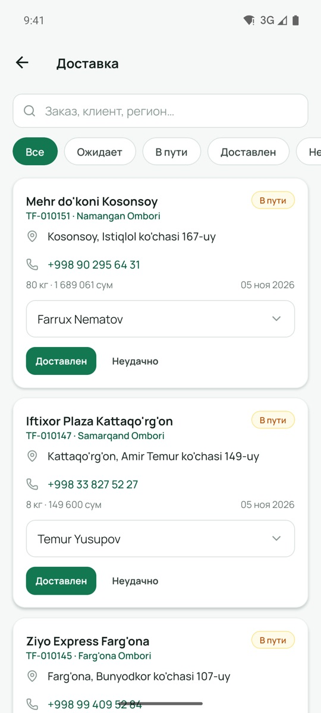
Список доставок
Все доставки создаются автоматически, когда заказ отгружается. Для каждой доставки показаны клиент, номер заказа, склад, адрес, телефон, вес груза, сумма заказа и плановая дата.
Статусы
Ожидает→В пути→ДоставленилиНеудачно
Что можно сделать
Курьер (выпадающий список) — менеджер назначает или меняет курьера.
Доставлен — отметить успешную доставку. Заказ автоматически станет «Доставлен».
Неудачно — клиента не было на месте, он отказался и т. п.
Нажмите на телефон клиента, чтобы позвонить перед приездом.
Фильтры: Все, Ожидает, В пути, Доставлен, Неудачно. Поиск — по заказу, клиенту и региону.
Для курьера
Доставка — ваш главный экран. После передачи товара сразу нажимайте «Доставлен», а если клиент платит на месте, примите оплату во вкладке «Финансы».
5.10 Остатки и движение менеджер · агент · аудитор (просмотр)
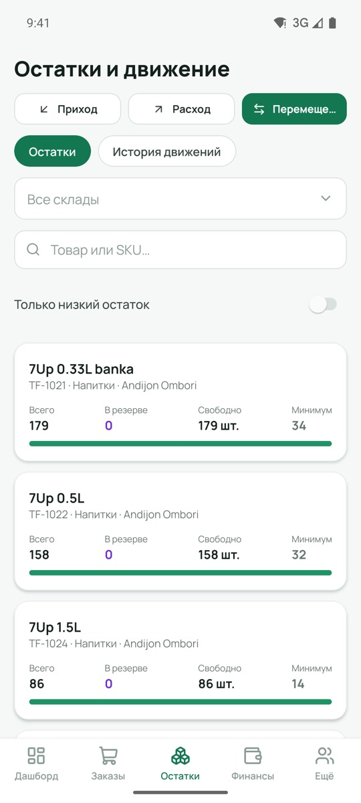
Остатки по складам
Экран показывает, сколько каждого товара лежит на каждом складе.
Всего — физически на складе.
Резерв — забронировано подтверждёнными заказами.
Свободно = всего − резерв. Только это количество можно продать.
Цветная полоса — уровень запаса относительно минимума.
Фильтры: склад, переключатель Только низкий остаток, поиск по товару или артикулу.
Кнопки вверху (только менеджер)
Приход — поступление товара на склад.
Расход — списание (брак, порча, возврат поставщику).
Перемещение — перевод товара с одного склада на другой.
Вкладка «История движений»: каждый приход, расход, перемещение и корректировка
Во вкладке История движений видна каждая операция с товаром: кто, когда, сколько и почему. Любое изменение остатка записывается в историю, поэтому «потерять» товар без следа нельзя.
5.11 Аудит (инвентаризация) менеджер · аудитор
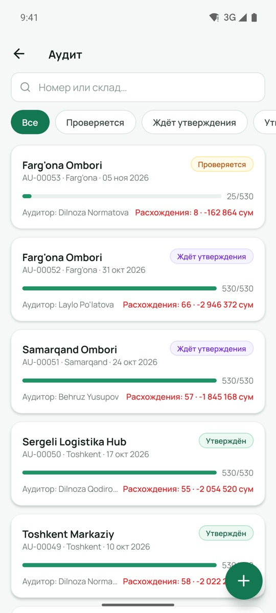
Список аудитов
Аудит сравнивает остаток в системе с фактическим пересчётом на складе. Для каждого аудита в списке указаны склад, номер (например, AU-00053), дата, аудитор, прогресс пересчёта (например, 25/530), количество расхождений и их сумма.
Статусы
Проверяется→Ждёт утверждения→Утверждён
Проверяется — аудитор пересчитывает товар.
Ждёт утверждения — пересчёт завершён и больше не меняется.
Утверждён — менеджер подтвердил результат, остатки в системе исправлены на фактические.
Кнопка Начать аудит (зелёная, внизу справа) открывает окно «Новый аудит». Выберите склад и аудитора, добавьте комментарий. Текущий остаток склада автоматически записывается в аудит как «ожидаемое» количество.
Карточка аудита — как считать
Откройте аудит. Вверху — склад, аудитор и дата начала, ниже — карточки Пересчитано, Позиций с расхождением и Сумма расхождения (по себестоимости).
В Листе пересчёта найдите товар через поиск и введите фактическое количество в поле справа. Под названием товара видно, сколько ожидается по системе.
Регулярно нажимайте Сохранить — пересчёт сохранится, и можно продолжить позже.
Заполнить пустые ожидаемым — подставить системное количество во все незаполненные строки (если остальное совпадает).
Когда всё посчитано, нажмите Завершить. Аудит уйдёт на утверждение.
Менеджер открывает аудит со статусом «Ждёт утверждения», проверяет расхождения и нажимает Подтвердить. Остатки автоматически корректируются до фактических.
Важно
Завершённый аудит изменить нельзя. Перед нажатием «Завершить» проверьте строки с расхождениями — они выделены красным.
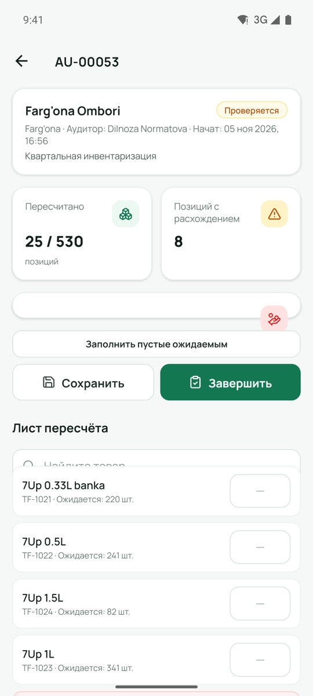
Карточка аудита и лист пересчёта
5.12 Товары все роли · редактирование: менеджер
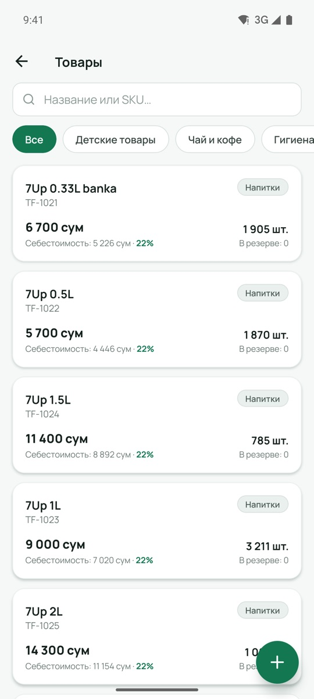
Каталог товаров
Каталог всех товаров: название, артикул (SKU), категория, цена продажи, себестоимость и маржа в процентах, общий остаток на всех складах и резерв, а для скоропортящихся товаров — срок годности.
Фильтры по категориям: Напитки, Чай и кофе, Молочные продукты, Бытовая химия и другие.
Поиск по названию и артикулу.
Менеджер может добавить товар (+, окно «Новый товар») и изменить его карточку: название, SKU, категорию, цену продажи, себестоимость, единицу измерения, минимальный остаток, срок годности, НДС, код ИКПУ (MXIK), код упаковки и вес.
5.13 Склады менеджер · аудитор
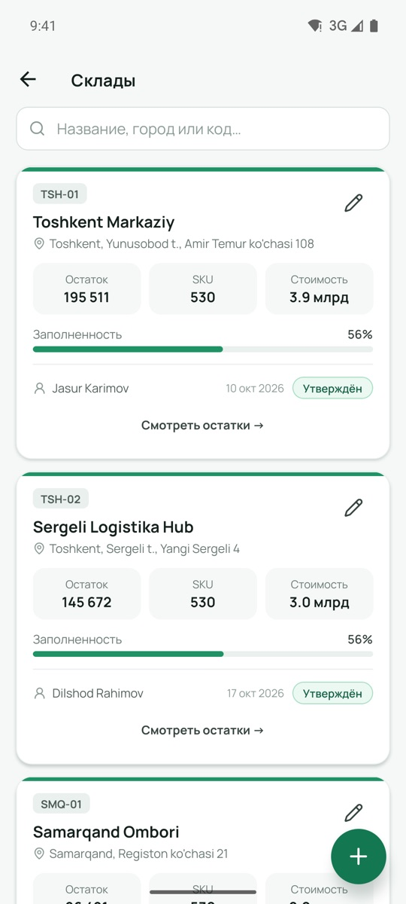
Склады
Карточка каждого склада содержит:
код (например, TSH-01), название и адрес;
Остаток в штуках, количество SKU и стоимость запаса;
Заполненность склада в процентах;
ответственного сотрудника, дату и статус последнего аудита;
ссылку Смотреть остатки →, которая открывает остатки этого склада.
Менеджер может добавить склад и изменить его данные. Отключённый склад сохраняет историю, но в него нельзя оформить новые заказы, приход или перемещение.
5.14 Торговая команда менеджер · агент
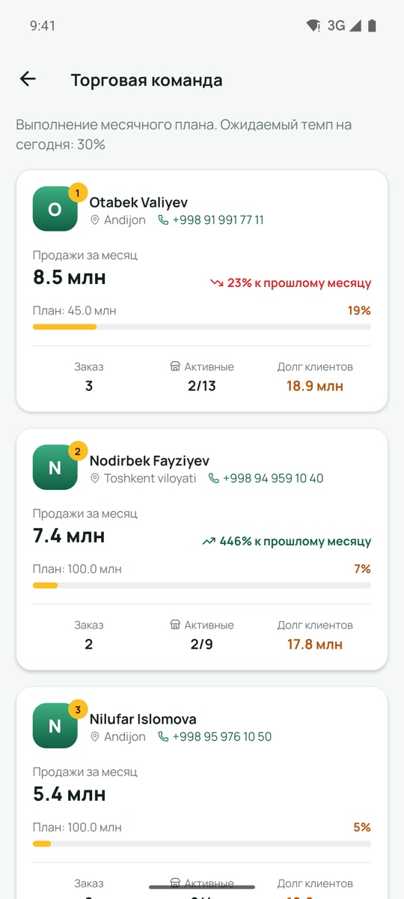
Рейтинг торговых агентов
Рейтинг агентов по выполнению месячного плана. Вверху указан ожидаемый темп на сегодня: например, «30 %» означает, что к этой дате нормально выполнить 30 % плана.
Карточка агента включает:
место в рейтинге (1, 2, 3…), регион и телефон;
Продажи за месяц и изменение к прошлому месяцу;
План и полосу выполнения в процентах;
Заказы, Активные клиенты (сколько из закреплённых покупали) и Долг клиентов агента.
Для агента
Сравните свой процент с ожидаемым темпом. Если отстаёте, посмотрите рекомендации «Агента продаж» в разделе «Умные агенты».
5.15 Умные агенты менеджер · агент
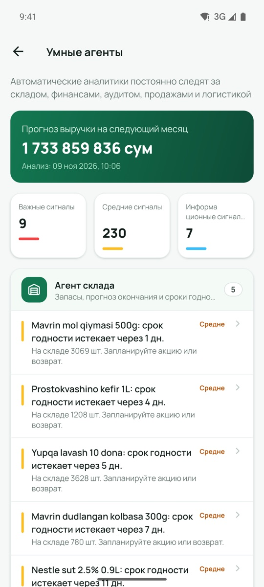
Умные агенты
Пять автоматических аналитиков постоянно проверяют данные и сообщают о проблемах до того, как они станут убытками.
Прогноз выручки на следующий месяц — расчёт на основе текущих продаж.
Счётчики сигналов: ВажныеСредниеИнформационные.
Агент
Что отслеживает
Агент склада
Запасы, прогноз окончания товара, истекающие сроки годности.
Финансовый агент
Дебиторку, превышение кредитного лимита, уровень взыскания.
Агент аудита
График инвентаризаций, склады без проверки, крупные недостачи.
Агент продаж
Выполнение плана, неактивных клиентов, прогноз.
Агент логистики
Сроки доставки и работу курьеров.
Каждый сигнал содержит готовую рекомендацию, например: «Остановите новые отгрузки и направьте взыскателя». Нажмите на сигнал, чтобы перейти к нужному клиенту, товару или складу.
5.16 Лиды менеджер
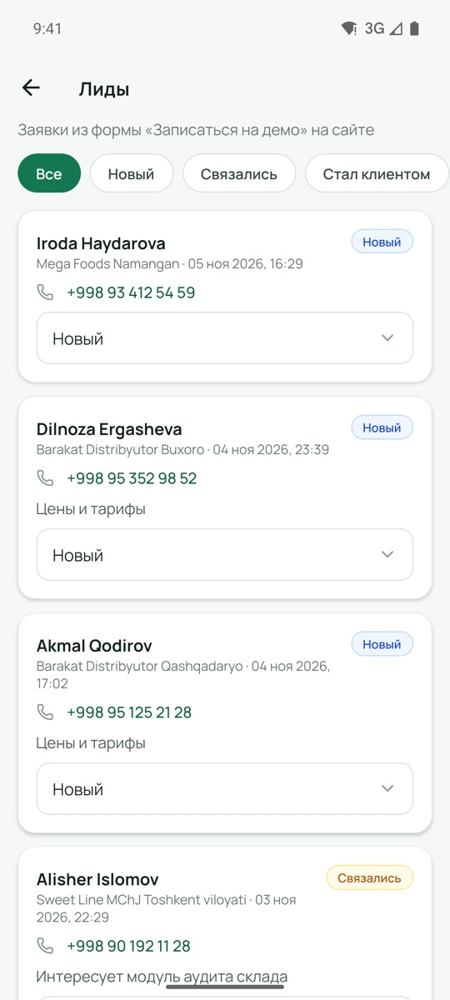
Лиды — заявки
Лиды — это заявки потенциальных клиентов из формы «Записаться на демо» на сайте и в приложении. В карточке указаны имя, компания, дата, телефон (нажатие запускает звонок) и сообщение.
Работа с заявкой
Меняйте статус в выпадающем списке по мере работы:
Новый→Связались→Стал клиентомилиПотерян
Фильтры по статусам помогают не забыть о новых заявках.
5.17 Раздел «Ещё»
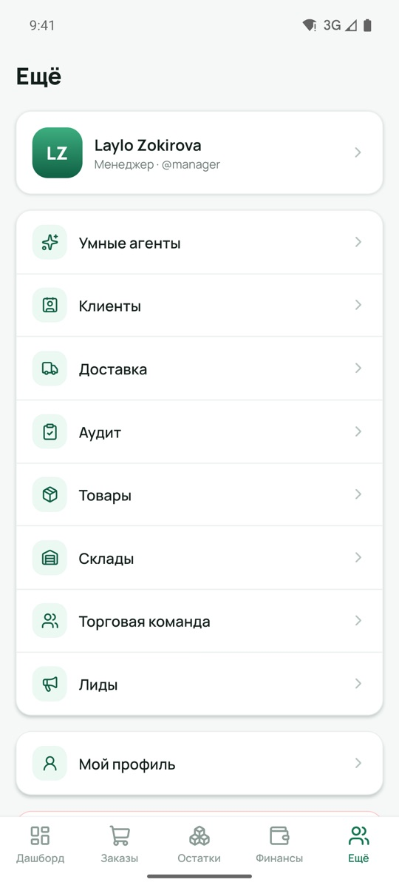
«Ещё» у менеджера
Вверху находится карточка вашего профиля: имя, логин и роль. Нажмите на неё, чтобы открыть Мой профиль.
Ниже — все разделы, которые не поместились в нижнее меню. Их набор зависит от роли (см. раздел 4).
Внизу списка есть кнопка Выйти — выход из аккаунта. Перед выходом приложение попросит подтверждение.
Для администратора
Управление сотрудниками, интеграции и журнал действий доступны только в веб-панели (часть 2 руководства).
5.18 Мой профиль все роли
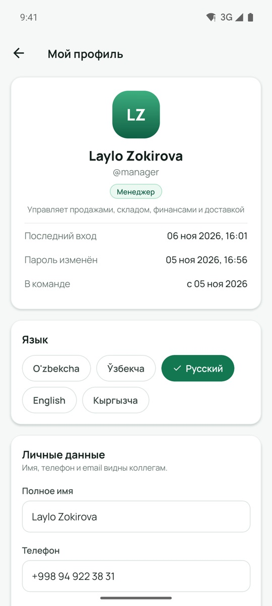
Мой профиль
Карточка: имя, логин, роль и её описание, дата последнего входа, когда менялся пароль и с какого времени вы в команде.
Язык — O'zbekcha, Ўзбекча, Русский, English, Кыргызча. Интерфейс и сообщения сервера сразу переключаются на выбранный язык.
Личные данные — полное имя, телефон и email. Эти данные видят коллеги. Нажмите «Сохранить».
Смена пароля — текущий пароль, новый пароль и его повтор, затем Сменить пароль. Остальные ваши сессии (например, на другом телефоне) будут закрыты.
Мои права — список того, что разрешено вашей роли.
Последняя активность — входы в систему с датой и IP-адресом. Если видите незнакомый вход, срочно смените пароль.
Выйти — выход из аккаунта (с подтверждением). Внизу указана версия приложения.
6
Работа по ролям — готовые сценарии
Типичный рабочий день: что и в каком порядке нажимать
Торговый агент: визит в торговую точку
Новый клиент?Клиенты → +, введите ИНН и нажмите Заполнить из налоговой, укажите сегмент и сохраните.
Проверьте долг: откройте карточку клиента. Если долг близок к лимиту, сначала примите оплату.
Примите оплату: в карточке клиента нажмите Оплата, введите сумму и способ. Или отправьте клиенту ссылку Payme / Click.
Оформите заказ:Заказы → +, выберите клиента, склад и товары, затем Создать заказ.
Вечером: откройте Ещё → Торговая команда и сравните выполнение плана с ожидаемым темпом.
Курьер: доставка заказов
Откройте вкладку Доставка и выберите фильтр В пути. Это ваш маршрут на сегодня.
Перед приездом нажмите на телефон клиента, чтобы позвонить.
Передали товар — нажмите Доставлен. Не получилось — Неудачно.
Клиент платит на месте: Финансы → Принять оплату.
Аудитор: инвентаризация склада
Аудит → откройте назначенный вам аудит со статусом «Проверяется».
Пересчитайте товар по полкам и вводите фактическое количество в «Листе пересчёта», найдя товар через поиск.
Каждые 10–15 минут нажимайте Сохранить.
Проверьте строки с расхождениями (красные) и пересчитайте их ещё раз.
Нажмите Завершить — аудит уйдёт менеджеру на утверждение.
Сумма заказа добавляется к долгу клиента в момент отгрузки, а не при создании заказа.
Кредитный лимит
Если долг клиента вместе с новым заказом превышает лимит, заказ не будет создан.
Оплата
Сумма всегда больше нуля. Оплата сразу уменьшает долг клиента.
Порядок статусов заказа
Новый → Подтверждён → Отгружен → Доставлен. Доставленный или отменённый заказ изменить нельзя.
Аудит
Проверяется → Ждёт утверждения → Утверждён. После завершения пересчёт не меняется. После утверждения остатки становятся равны фактическим.
История всего
Каждое движение товара, вход в систему и изменение данных сотрудников записывается в журнал.
Если появилось сообщение об ошибке
Приложение показывает текст ошибки от сервера без изменений, например: «Превышен кредитный лимит» или «Недостаточно остатка». Прочитайте его — в нём указано, что именно не так.
8
Частые вопросы и помощь
Вопрос
Ответ
Работает ли приложение без интернета?
Нет. Все данные хранятся на сервере, поэтому нужен Wi-Fi или мобильный интернет.
Как сменить язык?
Ещё → Мой профиль → Язык или кнопка языка на экране входа.
Забыл пароль.
Обратитесь к администратору: он сбросит пароль и выдаст новый.
Почему у меня нет какой-то кнопки?
Её нет у вашей роли. Права роли видны в Мой профиль → Мои права.
Не вижу нового заказа или оплаты.
Потяните список вниз, чтобы обновить его. Проверьте фильтр: возможно, выбран другой статус.
Можно ли работать на двух телефонах?
Да. Но после смены пароля другие сессии закроются, и там нужно войти заново.
Где управлять сотрудниками?
В веб-панели, раздел «Сотрудники и роли» (только администратор). См. часть 2.
Будет ли версия для iPhone?
Да, она выйдет позже из того же кода. Функции будут такими же.